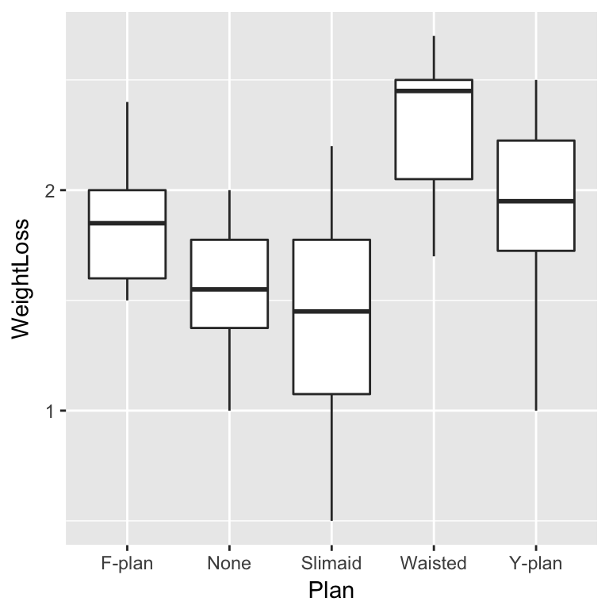
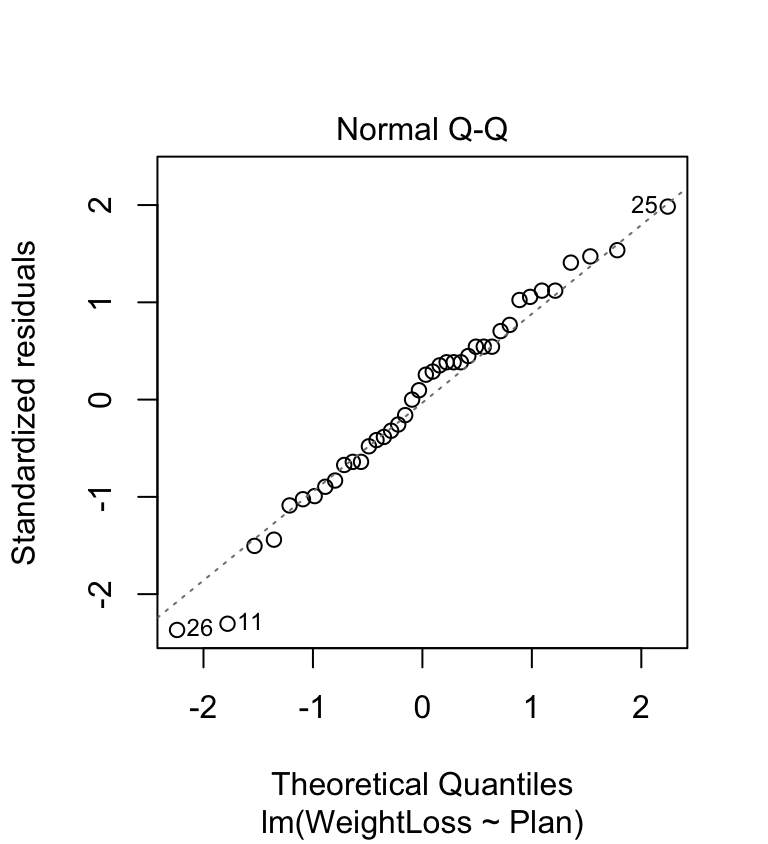
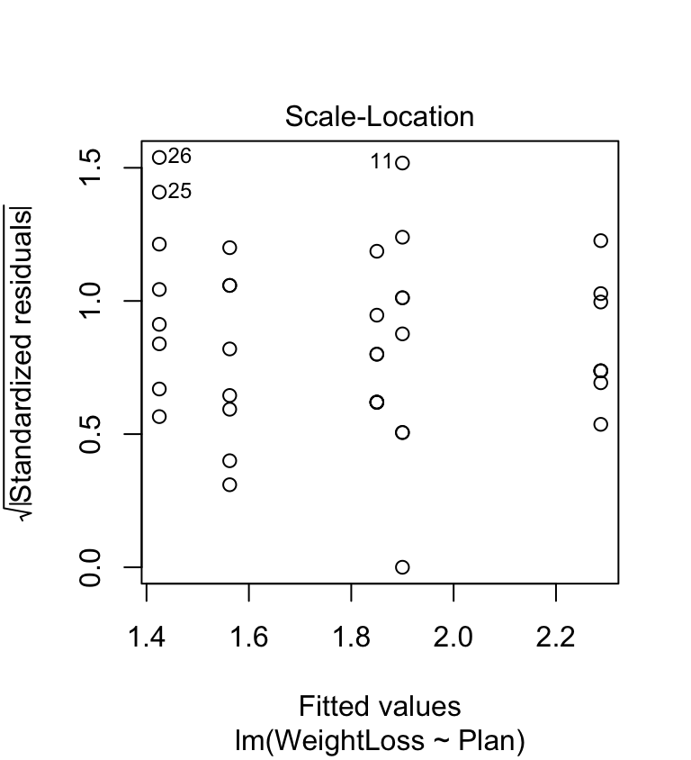
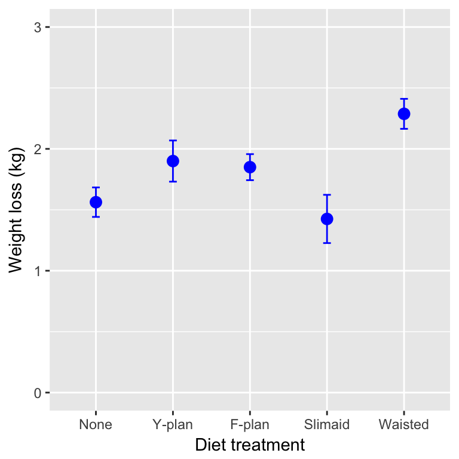
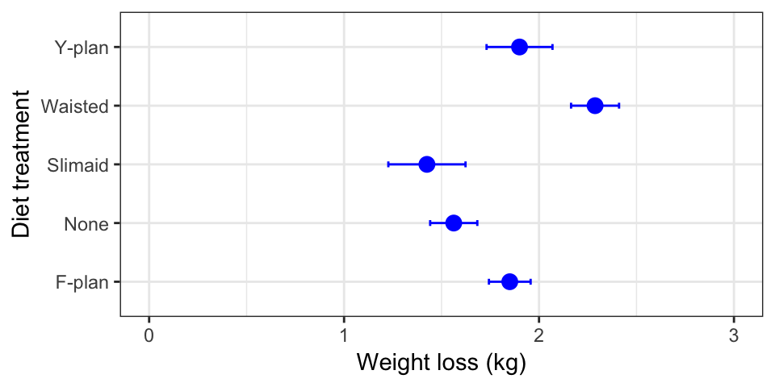
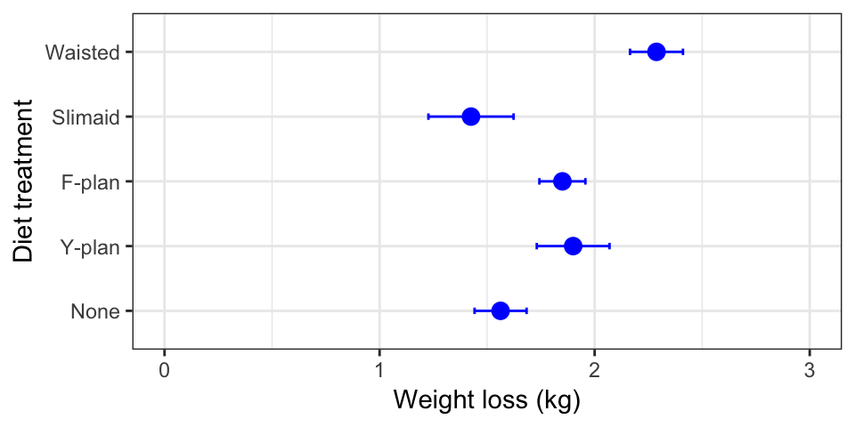
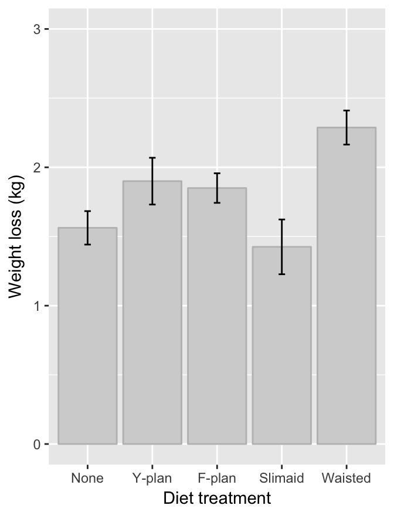

Chapter 25 One-way ANOVA in R
25.1 Introduction
Our goal in this chapter is to learn how to work with one-way ANOVA models in R. Just as we did with regression, we’ll do this by working through an example—the diets example from the last chapter. We’ll start with the problem and the data, and then work through model fitting, evaluating assumptions, significance testing, and finally, presenting the results.
Before we can do this though, we need to side track a bit and learn about ‘factors’ in R…
Walk through
You should begin working through the diet example from this point. You will need to download the DIET_EFFECTS.CSV file from MOLE and place it in your working directory.
25.2 Factors in R
Remember factors? An experimental factor is a controlled variable whose levels (‘values’) are set by the experimenter. R is primarily designed to carry out data analysis so we shouldn’t be surprised that it has a special type of vector to represent factors. This kind of vector in R is called, rather sensibly, a factor. We have largely ignored factors in R up until now because we haven’t needed to use them45. However, we now need to understand how they work because much of R’s plotting and statistical modelling facilities rely on factors.
We’ll look at the diet data (stored in diet_effects) to begin getting a sense of how they work:
diet_effects <- read.csv(file = "DIET_EFFECTS.CSV")First, we need to be able to actually recognise a factor when we see one. Here is the result of using glimpse with the diet data:
glimpse(diet_effects)## Observations: 40
## Variables: 2
## $ Plan <fctr> None, None, None, None, None, None, None, None, Y-...
## $ WeightLoss <dbl> 1.3, 2.0, 1.7, 1.6, 1.5, 1.4, 1.0, 2.0, 1.5, 1.8, 1...This tells us that there are 40 observations in the data set and 2 variables (columns), called Plan and WeightLoss. The text next to $ Plan says <fctr>. We can guess what that stands for…. it is telling us that the Plan vector inside diet_effects is a factor. The Plan factor was created automatically when we read the data stored in DIET_EFFECTS.CSV into R. When we read in a column of data that is non-numeric, read.csv will often decide to turn it into a factor for us46.
R is generally fairly good at alerting us to the fact that a variable is stored as a factor. For example, look what happens if we extract the Plan column from diet_effects and print it to the screen:
diet_effects$Plan## [1] None None None None None None None None
## [9] Y-plan Y-plan Y-plan Y-plan Y-plan Y-plan Y-plan Y-plan
## [17] F-plan F-plan F-plan F-plan F-plan F-plan F-plan F-plan
## [25] Slimaid Slimaid Slimaid Slimaid Slimaid Slimaid Slimaid Slimaid
## [33] Waisted Waisted Waisted Waisted Waisted Waisted Waisted Waisted
## Levels: F-plan None Slimaid Waisted Y-planThis obviously prints out the values of each element of the vector, but look at the last line:
## Levels: F-plan None Slimaid Waisted Y-planThis alerts us to the fact that Plan is a factor, with 5 levels (the different diets). Look at the order of the levels: these are alphabetical by default. Remember that! The order of the levels in a factor can be important as it controls the order of plotting in ggplot2 and it affects the way R presents the summaries of statistics. This is why we are introducing factors now—we are going to need to manipulate the levels of factors to alter the way our data are plotted and analysed.
25.3 Roughly checking the assumptions
We listed the assumptions of ANOVA at the end of the last chapter, but here they are again:
Independence. The experimental units must be independent.
Measurement scale. The focal variable should be measured on an interval or ratio scale.
Equal variance. The variance of the focal variable within each treatment combination is assumed to be constant.
Normality. The focal variable is assumed to be normally distributed within each treatment combination.
The first two assumptions are about independence and the type of variable. The independence assumption is an aspect of the experimental design, so we’ll just have to assume this assumption is satisfied without knowing more about how the data were collected. The second assumption states that the variable being analysed (WeightLoss) should be an interval or ratio scale numeric variable. Change in weight is clearly a ratio scale numeric variable.
The last two assumptions are about the distribution of the variables in each group. The thing to bear in mind here is that there are five different groups to consider—one for each treatment. We are interested in whether the variance within each group is similar, and whether the WeightLoss variable within each group is likely to have been drawn from a normal distribution. A simple plot to roughly assess the distributional assumptions of ANOVA is the box and whiskers plot:
ggplot(data = diet_effects, aes(x = Plan, y = WeightLoss)) +
geom_boxplot()
Simple! We just set the x and y axis aesthetics to the Plan and Weightloss variables, respectively, and use geom_boxplot to add the required layer.
The resulting box and whiskers plot summarises the distribution of weight loss in each diet group: 1) the median diet loss in each group (horizontal lines) shows us the central tendency; 2) the interquartile range (the boxes) summarises the dispersion / spread; and 3) roughly speaking, the ‘whiskers’ summarise the range of the data. The plot indicates that that the variability within each group is quite similar, the distributions are fairly symmetric (i.e. the lower whisker, the box and the upper whisker are all about equally large), and there are no ‘outliers’. These features are consistent with a normal distribution.
Dot plots or histograms might also be used to make a more direct assessment of the distributional assumptions. However, these aren’t very useful when there are only a few replicates in each group. A much better way to assess the distributional assumptions is via regression diagnostics. That’s right, we use ‘regression’ diagnostics to evaluate the assumptions of an ANOVA model. We’ll come back to this after we’ve fitted the model…
25.4 Fitting the ANOVA model
Carrying out ANOVA in R is quite simple, but as with regression, there is more than one step. The first involves a process known as fitting the model (or just model fitting). This is the step where R calculates the relevant means, along with the additional information needed to generate the results in step two. We call this step model fitting because an ANOVA is a type of model for our data: it is a model that allows the mean of a variable to vary among groups.
How do we fit an ANOVA model in R? We will do it using the lm function again. Remember what the letters ‘lm’ stand for? They stand for ‘(general) linear model’. So… an ANOVA model is just another special case of the general linear model. Here is how we fit a one-way ANOVA in R, using the diet data:
diets_model <- lm(WeightLoss ~ Plan, data = diet_effects)Hopefully by now this kind of thing is starting to look familiar. We have to assign two arguments:
The first argument is a formula. We know this because it includes a ‘tilde’ symbol:
~. The variable name on the left of the~must be the numeric variable whose means we want to compare among groups. The variable on the right should be the indicator variable that says which group each observation belongs to. These areWeightLossandPlan, respectively.The second argument is the name of the data frame that contains the two variables listed in the formula.
Why does R carry out ANOVA?
How does R know we want to use an ANOVA model? After all, we didn’t specify this anywhere. The answer is that R looks at what type of vector Plan is. It is a factor, and so R automatically carries out an ANOVA. It would do the same if Plan had been a character vector. However, if the levels of Plan had been stored as numbers (1, 2, 3, …) then R would not have fitted an ANOVA. We’ve already seen what would have happened. It would have assumed we meant to fit a regression model. This is why we don’t store categorical variables as numbers in R. Avoid using numbers to encode the levels of a factor, or any kind of categorical variable, if you want to avoid making mistakes in R.
Notice that we did not print the results to the console. Instead, we assigned the result a name (diets_model)—diets_model now refers to a model object. What happens if we print this to the console?
diets_model##
## Call:
## lm(formula = WeightLoss ~ Plan, data = diet_effects)
##
## Coefficients:
## (Intercept) PlanNone PlanSlimaid PlanWaisted PlanY-plan
## 1.8500 -0.2875 -0.4250 0.4375 0.0500Not a great deal. Printing a fitted model object to the console is not very useful when working with ANOVA. We just see a summary of the model we fitted and some information about the coefficients of the model. Yes, an ANOVA model has coefficients, just like a regression does. What we really want to extract from the model is a significance test.
However, before we dive into p-values, we should revisit the assumptions of the ANOVA model using… regression diagnostics. Yes, regression diagnostics. Remember, we can use the diagnostic tools developed for regression to evaluate the assumptions of any model produced by lm. Now that we have a fitted model, we can go ahead and examine these. It makes sense to do this before doing ‘the stats’ because if there is a problem we need to fix it before proceeding.
25.5 Diagnostics
The first diagnostic plot we might produce is the residuals vs. fitted values plot. In a regression this is used to evaluate the linearity assumption. What does it do in a one-way ANOVA? Not much of use to be honest. There isn’t much point making a residuals vs. fitted values plot for a one-way ANOVA. Why? Because the residuals will never show a trend with respect to the ‘fitted values’, which are just the group-specific means. That’s one thing less to worry about.
The normal probability plot is used to identify departures from normality. This plot allows us to check whether the deviations from the group means (the residuals) are likely to have been drawn from a normal distribution. This is definitely something we’d like to assess for an ANOVA model. Here’s the normal probability plot for the diet example:
plot(diets_model, which = 2, add.smooth = FALSE) This looks very good. The points don’t deviate from the line in a systematic way (except for a couple at the lower end—this is nothing to worry about) so it looks like the normality assumption is satisfied.
The scale-location plot allows us to evaluate the constant variance assumption of ANOVA. This allows us to see whether or not the variability of the residuals is roughly constant within each group. Here’s the scale-location plot for the diet example:
plot(diets_model, which = 3, add.smooth = FALSE)
The warning sign we’re looking for here is a systematic pattern. We want to see if the magnitude of the residuals tends to increase or decrease with the fitted values. If such a pattern is apparent then it suggests that variance changes with the mean. There is no such pattern in the above plot so it looks like the constant variance assumption is satisfied.
So it looks like our assumptions are fine and we can move onto the hypothesis testing step. A word of warning first. It may be tempting to evaluate the assumptions of an ANOVA by plotting the distribution of residuals in each group. Don’t do this—use the regression diagnostics instead. They are a much more powerful diagnostic tool than dot plots or histograms of residuals.
25.5.1 Aside: formal test of equality of variance
It is not critical that you learn the material in this short section. It is provided so that you know how to test for equality of variance. You won’t be asked to do this in an assessment.
Looking back over the scale-location plot, it seems like three of the treatment groups exhibit similar variability, while the remaining two are more variable. They aren’t wildly different, so it is reasonable to assume the differences are due to sampling variation. People are sometimes uncomfortable using this sort of visual assessment. They want to see a p-value… A number of statistical tests have been designed to evaluate the equality of variance assumption. The most widely used is the Bartlett test (the bartlett.test function in R). Here is how to use it:
bartlett.test(WeightLoss ~ Plan, data = diet_effects)##
## Bartlett test of homogeneity of variances
##
## data: WeightLoss by Plan
## Bartlett's K-squared = 3.6444, df = 4, p-value = 0.4563This looks just like the t-test specification. We use a ‘formula’ (WeightLoss ~ Plan) to specify the variable of interest (WeightLoss) and the grouping variable (Plan), and use the data argument to tell the bartlett.test function where to look for these variables. The null hypothesis of a Bartlett test is that the variances are equal, so a non-significant p-value (>0.05) indicates that the data are consistent with the equal variance assumption. That’s what we find here.
Generally speaking, we don’t recommend that you carry out a statistical test to evaluate the equality of variance assumption. We have shown it because some people seem to think they are needed. Here is why we think they are wrong: formal tests of equality of variance are not very powerful (in the statistical sense). This means that in order to detect a difference, we either need a lot of data, or the differences need to be so large that they would be easy to spot using a graphical approach.
25.6 Interpreting the results
What we really want is a p-value to help us determine whether there is statistical support for a difference among the group means. That is, we need to calculate things like degrees of freedom, sums of squares, mean squares, and the F-ratio. This is step 2.
We use the anova function to do this:
anova(diets_model)## Analysis of Variance Table
##
## Response: WeightLoss
## Df Sum Sq Mean Sq F value Pr(>F)
## Plan 4 3.5765 0.89412 5.1281 0.002331 **
## Residuals 35 6.1025 0.17436
## ---
## Signif. codes: 0 '***' 0.001 '**' 0.01 '*' 0.05 '.' 0.1 ' ' 1Notice that all we did was pass the anova function one argument: the name of the fitted model object. Let’s step through the output to see what it means. The first line just informs us that we are looking at an ANOVA table, i.e. a table of statistical results from an analysis of variance. The second line just reminds us what variable we analysed.
The important information is in the table that follows:
## Df Sum Sq Mean Sq F value Pr(>F)
## Plan 4 3.5765 0.89412 5.1281 0.002331 **
## Residuals 35 6.1025 0.17436This is an Analysis of Variance Table. It summarises the parts of the ANOVA calculation: Df – degrees of freedom, Sum Sq – the sum of squares, Mean Sq – the mean square, F value – the F-ratio (i.e. variance ratio), Pr(>F) – the p-value.
The F-ratio (variance ratio) is the key term. This is the test statistic. It provides a measure of how large and consistent the differences between the means of the five different treatments are. Larger values indicate clearer differences between means, in just the same way that large values of Student’s t indicate clearer differences between means in the two sample situation.
The p-value gives the probability that the observed differences between the means, or a more extreme difference, could have arisen through sampling variation under the null hypothesis. What is the null hypothesis: it is one of no effect of treatment, i.e. the null hypothesis is that all the means are the same. As always, the p-value of 0.05 is used as the significance threshold, and we take p < 0.05 as evidence that at least one of the treatments is having an effect. For the diet data, the value is 5.1, and the probability (p) of getting an F-ratio this large is given by R as 0.0023, i.e. less than 0.05. This provides good evidence that there are differences in weight loss between at least some of the treatments.
So far so good. The test that we have just carried out is called the global test of significance. It goes by this name because it doesn’t tell us anything about which means are different. The analyses suggest that there is an effect of diet on weight loss, but some uncertainty remains because we have only established that there are differences among at least some diets. A global test doesn’t say which diets are better or worse. This could be very important. If the significant result is generated by all diets being equally effective (hence differing from the control but not from each other) we would draw very different conclusions than if the result was a consequence of one diet being very effective and all the others being useless. Our result could even be produced by the diets all being less effective than the control!
So having got a significant result in the ANOVA, we should always look at the means of the treatments to understand where the differences actually lie. We did this in the previous chapter but here is the figure again anyway:

What looking at the means tells us is that the effect of the diets is generally to increase weight loss (with one exception, ‘Slimaid’) relative to the control group (‘None’), and that it looks as though ‘Waisted’ is the most effective, followed by ‘Y-plan’ and ‘F-plan’.
Often inspection of the means in this way will tell us all we need to know and no further work will be required. However, sometimes it is desirable to have a more rigorous way of testing where the significant differences between treatments occur. A number of tests exist as ‘add ons’ to ANOVA which enable you to do this. These are called post hoc multiple comparison tests (sometimes just ‘multiple comparison tests’). We’ll see how to conduct multiple comparison tests in the next chapter.
25.7 Summarising and presenting the results of ANOVA
As with all tests it will usually be necessary to summarise the result from the test in a written form. With an ANOVA on several treatments, we always need to at least summarise the results of the global test of significance. Here is again:
There was a significant effect of diet on the weight losses of subjects (ANOVA: F=5.1; d.f.= 4,35; p<0.01).
There are several things to notice here:
The degrees of freedom are always quoted as part of the result, and…there are two values for the degrees of freedom to report in ANOVA because it involves F-ratios. These are obtained from the ANOVA table and should be given as the treatment degrees of freedom first, followed by the error degrees of freedom. Order matters. Don’t mix it up.
The degrees of freedom are important because, like a t-statistic, the significance of an F-ratio depends on the degrees of freedom, and giving them helps the reader to judge the result you are presenting. A large value may not be very significant if the sample size is small, a smaller may be highly significant if the sample sizes are large.
The F-ratio rarely needs to be quoted to more than one decimal place.
When it comes to presenting the results in a report, it helps to present the means, as the statement above cannot entirely capture the results. We could use a table to do this, but tables are ugly and difficult to interpret. A good figure is much better.
You won’t be assessed on your ability to produce summary plots such as those below. Nonetheless, you should try to learn how to make them because you will need to produce these kinds of figures in your own projects.
Box and whiskers plots and multi-panel dot plots / histograms are exploratory data analysis tools. We use them at the beginning of an analysis to understand the data, but we don’t tend to present them in project reports or scientific papers. Since ANOVA is designed to compare means, a minimal plot needs to show the point estimates of each group-specific mean, along with a measure of their uncertainty. We often use the standard error of the means to summarise this uncertainty.
In order to be able to plot these quantities we first have to calculate them. We can do this using dplyr. Here’s a reminder of the equation for the standard error of a mean: \[
SE = \frac{\text{Standard deviation of the sample}}{\sqrt{\text{Sample size}}} = \frac{SD}{\sqrt{n}}
\] So, the required dplyr code is:
# get the mean and the SE for each diet plan
diet_stats <-
diet_effects %>%
group_by(Plan) %>%
summarise(Mean = mean(WeightLoss), SE = sd(WeightLoss)/sqrt(n()))
# print to the console
diet_stats## # A tibble: 5 × 3
## Plan Mean SE
## <fctr> <dbl> <dbl>
## 1 F-plan 1.8500 0.1069045
## 2 None 1.5625 0.1209154
## 3 Slimaid 1.4250 0.1979809
## 4 Waisted 2.2875 0.1231107
## 5 Y-plan 1.9000 0.1690309Notice that we used the n function to get the sample size. The rest of this R code should be quite familiar by now. We gave the data frame containing the group-specific means and standard errors the name diet_stats.
We have a couple of different options for making a good summary figure. The first plots a point for each mean and places error bars around this to show ±1 SE. In order to do this using ggplot2 we have to add two layers—the first specifies the points (the means) and the second specifies the error bar (the SE). Here is how to do this:
ggplot(data = diet_stats,
aes(x = Plan, y = Mean, ymin = Mean - SE, ymax = Mean + SE)) +
# this adds the means
geom_point(colour = "blue", size = 3) +
# this adds the error bars
geom_errorbar(width = 0.1, colour = "blue") +
# controlling the appearance
scale_y_continuous(limits = c(0, 3)) +
# use sensible labels
xlab("Diet treatment") + ylab("Weight loss (kg)") +
# flip x and y axes
coord_flip() +
# use a more professional theme
theme_bw()
First, notice that we set the data argument in ggplot to be the data frame containing the summary statistics (not the original raw data). Second, we set up four aesthetic mappings: x, y, ymin and ymax. Third, we added one layer using geom_point. This adds the individual points based on the x and y mappings. Fourth, we added a second layer using geom_errorbar. This adds the error bars based on the x, ymin and ymax mappings. Finally we adjusted the y limits and the labels (this last step is optional). Ask a demonstrator to step through this with you if you are confused by it.
Take a close look at that last figure. Is there anything wrong with it? The control group in this study is the no diet group (‘None’). Conventionally, we display the control groups first. R hasn’t done this because the levels of Plan are in alphabetical order by default. If we want to change the order of plotting, we have to change the way the levels are organised. Here is how to to this using dplyr and a function called factor:
diet_stats <-
diet_stats %>%
mutate(Plan = factor(Plan, levels = c("None", "Y-plan", "F-plan", "Slimaid", "Waisted")))We use mutate to update Plan, using the factor function to redefine the levels of Plan and overwrite the original. Now, when we rerun the ggplot2 code we end up with a figure like this:

The treatments are presented in the order specified with the levels argument. Problem solved!
A bar plot is another popular visualisation for summarising the results of an ANOVA. We only have to change one thing about the last chunk of ggplot2 code to make a bar plot. Instead of using a geom_point, we use geom_bar (we’ll drop the coord_flip bit too):
ggplot(data = diet_stats,
aes(x = Plan, y = Mean, ymin = Mean - SE, ymax = Mean + SE)) +
# this adds the means
geom_bar(stat = "identity", fill = "lightgrey", colour = "grey") +
# this adds the error bars
geom_errorbar(width = 0.1, colour = "black") +
# controlling the appearance
scale_y_continuous(limits = c(0, 3)) +
xlab("Diet treatment") + ylab("Weight loss (kg)")
We have to set stat argument of geom_bar to "identity" to ensure it plots the y variable ‘as is’. If we forget to do this ggplot2 will just show you the number of cases in each group.
We have worked with factors, but only when reordering the labels of a categorical variable plotted in
ggplot2.↩This behaviour isn’t really all that helpful. It would be better if R let us, the users, decide whether or not to turn something into a factor vector. However, in the early days of R computers had limited memory, which meant storing a categorical variable as a factor made sense; it saved memory. This benefit of factors has long since disappeared, but we’re stuck with the turn-everything-into-a-factor behaviour.↩